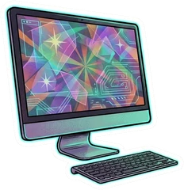
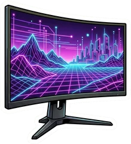

Tous les tests high‑tech, résumés pour vous.
Nous lisons les tests de la presse spécialisée, nous en tirons une note presse sur 10 et nous vous disons, usage par usage, quoi acheter — et pourquoi. Sans jargon, sans pub déguisée.

Les champions du moment
PC portables
Tout le comparatif →← Faites glisser pour voir les 5 usages →
 Asus Zenbook A14
Moins d'un kilo, un écran OLED et une autonomie qui dépasse largement la journée : l'ultraportable le plus facile à recommander pour travailler partout.
7,8/1022 notes presseenv. 990 €
Voir le classement →
Création
Asus Zenbook A14
Moins d'un kilo, un écran OLED et une autonomie qui dépasse largement la journée : l'ultraportable le plus facile à recommander pour travailler partout.
7,8/1022 notes presseenv. 990 €
Voir le classement →
Création Apple MacBook Pro 14" M5
Écran mini-LED parfaitement calibré, puce M5 polyvalente et connectique complète : la presse lui donne les meilleures notes de la catégorie.
9,3/107 notes presseenv. 2 200 €
Voir le classement →
Gaming
Apple MacBook Pro 14" M5
Écran mini-LED parfaitement calibré, puce M5 polyvalente et connectique complète : la presse lui donne les meilleures notes de la catégorie.
9,3/107 notes presseenv. 2 200 €
Voir le classement →
Gaming Lenovo Legion 5 15
Un écran OLED 165 Hz, un châssis soigné et un prix encore raisonnable : le meilleur rapport qualité-prix des PC gamer de cette génération selon la presse.
8,8/105 notes presseenv. 1 450 €
Voir le classement →
Polyvalent
Lenovo Legion 5 15
Un écran OLED 165 Hz, un châssis soigné et un prix encore raisonnable : le meilleur rapport qualité-prix des PC gamer de cette génération selon la presse.
8,8/105 notes presseenv. 1 450 €
Voir le classement →
Polyvalent Lenovo Yoga Slim 7 14
Châssis léger, écran OLED bien calibré, grande autonomie et connectique complète : aucun vrai point faible, et un prix redevenu raisonnable.
8,4/1018 notes presseenv. 900 €
Voir le classement →
Low-cost
Lenovo Yoga Slim 7 14
Châssis léger, écran OLED bien calibré, grande autonomie et connectique complète : aucun vrai point faible, et un prix redevenu raisonnable.
8,4/1018 notes presseenv. 900 €
Voir le classement →
Low-cost Acer Aspire Go 15
Le petit prix le mieux testé : un 15 pouces simple et honnête, suffisant pour le web, les cours et la bureautique.
7,3/106 notes presseenv. 430 €
Voir le classement →
Acer Aspire Go 15
Le petit prix le mieux testé : un 15 pouces simple et honnête, suffisant pour le web, les cours et la bureautique.
7,3/106 notes presseenv. 430 €
Voir le classement →
Ordinateurs de bureau
Tout le comparatif →← Faites glisser pour voir les 5 usages →
 Apple Mac mini M6
Minuscule, silencieux et très rapide : toujours le meilleur petit ordinateur de bureau, même si son prix a nettement augmenté.
8,0/103 notes presseenv. 1 030 €
Voir le classement →
Création
Apple Mac mini M6
Minuscule, silencieux et très rapide : toujours le meilleur petit ordinateur de bureau, même si son prix a nettement augmenté.
8,0/103 notes presseenv. 1 030 €
Voir le classement →
Création Apple Mac mini M5 Pro
La puissance d'une station de travail dans un boîtier de 12,7 cm, avec Thunderbolt 5 : le meilleur compromis pour la photo et le montage.
8,0/101 note presseenv. 1 990 €
Voir le classement →
Gaming
Apple Mac mini M5 Pro
La puissance d'une station de travail dans un boîtier de 12,7 cm, avec Thunderbolt 5 : le meilleur compromis pour la photo et le montage.
8,0/101 note presseenv. 1 990 €
Voir le classement →
Gaming HP Omen 35L
La tour gaming la mieux notée de la sélection : puissante, polyvalente, évolutive et plutôt élégante.
8,6/107 notes presseenv. 2 200 €
Voir le classement →
Mini-PC
HP Omen 35L
La tour gaming la mieux notée de la sélection : puissante, polyvalente, évolutive et plutôt élégante.
8,6/107 notes presseenv. 2 200 €
Voir le classement →
Mini-PC Geekom A7
Le mini-PC le mieux noté de la sélection : boîtier très fin et bien fini, deux ports USB4, processeur performant, et un prix devenu abordable.
8,4/1013 notes presseenv. 530 €
Voir le classement →
Tout-en-un
Geekom A7
Le mini-PC le mieux noté de la sélection : boîtier très fin et bien fini, deux ports USB4, processeur performant, et un prix devenu abordable.
8,4/1013 notes presseenv. 530 €
Voir le classement →
Tout-en-un
 Apple iMac 24" M4
Le tout-en-un le plus abouti : écran 4,5K aux belles couleurs, puce M4 instantanée et design inimitable.
7,8/104 notes presseenv. 1 800 €
Voir le classement →
Apple iMac 24" M4
Le tout-en-un le plus abouti : écran 4,5K aux belles couleurs, puce M4 instantanée et design inimitable.
7,8/104 notes presseenv. 1 800 €
Voir le classement →
Bien noté et pas trop cher ? C'est en bas à droite.
Chaque bulle est l'un des 3 meilleurs PC portables de chaque usage. Plus elle est à droite, plus la presse l'a aimé ; plus elle est basse, plus il est abordable ; plus elle est grosse, plus la note repose sur de nombreux tests. Cliquez sur une bulle pour ouvrir sa fiche.
Par où commencer ?
PC portables
50 machines, un top 10 par usage, 414 notes presse.
Ordinateurs de bureau
50 machines, un top 10 par usage : tours, mini-PC et tout-en-un.

BientôtÉcrans PC
Bureautique, gaming, retouche : la bonne dalle pour chaque usage.
Smartphones
Les meilleurs téléphones par budget, notes presse à l'appui.
Casques & écouteurs
Réduction de bruit, sport, gaming : le son sans se tromper.
Tablettes
iPad, Android, Windows : laquelle pour lire, dessiner ou travailler ?

Notre méthode en 3 étapes
On lit tous les tests
Presse française et internationale : Clubic, Les Numériques, Notebookcheck, Tom's Hardware, The Verge…
On calcule une note presse
La moyenne de toutes les notes, convertie sur 10, avec le nombre de tests toujours affiché.
On résume le verdict
Points forts, points faibles, pour qui c'est fait — et notre choix pour chaque usage.